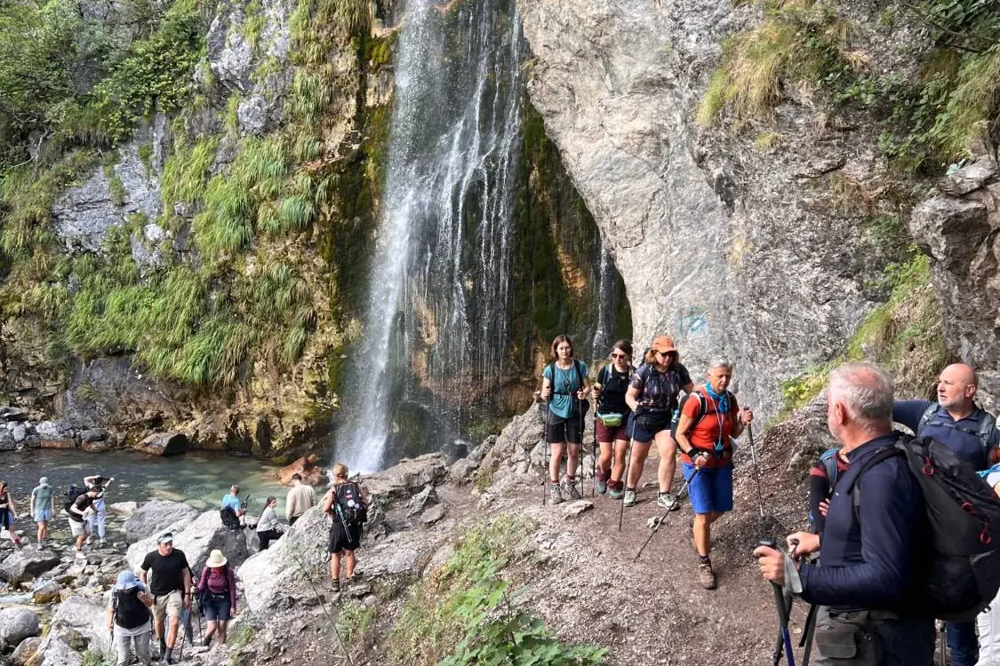

Toque numa miniatura (ou nas setas) e ela vira a foto grande. Nada é cortado na foto grande.

Fotos bem grandes, da altura da tela, uma ao lado da outra. No celular, arrasta com o dedo.
Todas as fotos pequenas numa grade. Tocou, abre em tela cheia com setas; Esc ou × fecha.